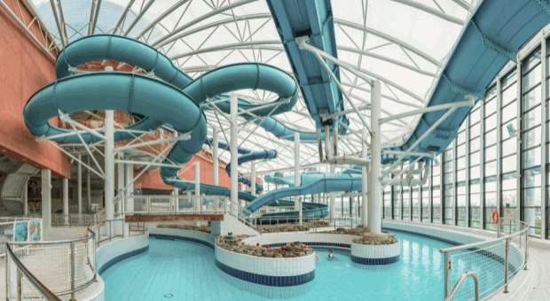

Discover Ireland
Five attractions worth exploring during a visit to Ireland.
01. Guinness Storehouse, Dublin
Located at St. James's Gate Brewery, the Guinness Storehouse tells the story of Guinness and its brewing heritage. Across seven floors, visitors can discover the ingredients, history and advertising associated with this famous Irish brand. The experience finishes at the Gravity Bar, which offers panoramic views of Dublin.

Annual visitors: 1,711,281
02. Cliffs of Moher, County Clare
The Cliffs of Moher are among Ireland's best-known natural attractions. Located on the Atlantic coast of County Clare, the cliffs offer impressive views of the ocean and surrounding coastline. They are also an important habitat for seabirds and a highlight of the Wild Atlantic Way.

Annual visitors: 1,527,000
03. Dublin Zoo
Established in 1830, Dublin Zoo is located in Phoenix Park. It is home to a wide variety of animals and supports wildlife conservation and education. Its different habitats allow visitors to learn about animals from around the world while enjoying a family day out.

Annual visitors: 1,264,300
04. National Aquatic Centre, Dublin
Located in Blanchardstown, the National Aquatic Centre is a major sports and leisure facility. It features swimming facilities and an indoor water park, making it a popular destination for families, swimmers and sports enthusiasts.

Annual visitors: 1,099,756
05. Book of Kells, Trinity College Dublin
The Book of Kells Exhibition is located at Trinity College in the centre of Dublin. It presents a famous illustrated manuscript created by Celtic monks around the ninth century. Visitors can also explore the historic Old Library and learn about Ireland's literary and cultural heritage.

Annual visitors: 983,410